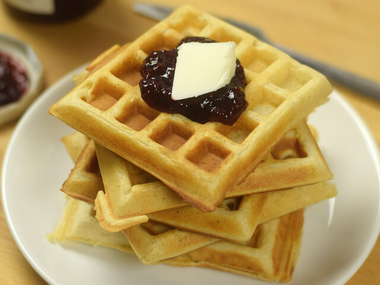

|

|
Elkészítés módja
- A száraz hozzávalókat összekeverjük egy tálban.
- A tojást, a langyos tejet és az olvasztott vajat pedig egy másik tálban felverjük.
- A liszthez hozzáöntjük jó sűrű kevergetés mellett az előzőleg jól felvert tejes keveréket, majd
az egészet kikeverjük úgy, hogy egy jó sűrű, de mégis kissé folyós masszát kapjunk.
- A gofrisütőt olajjal kikenjük, és belemerjük adagonként a gofri masszáját, és megsütjük. A végén
ízlésünknek megfelelően fogyasztjuk.
Hozzávalók
|